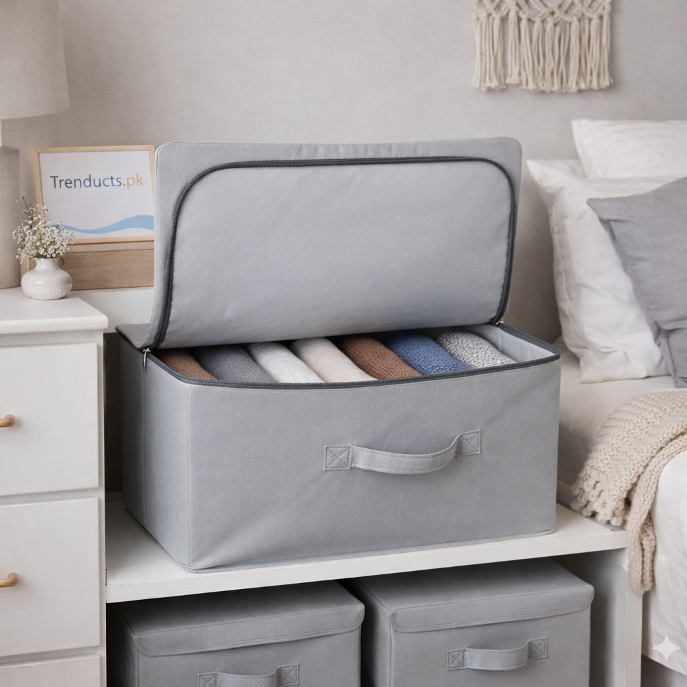
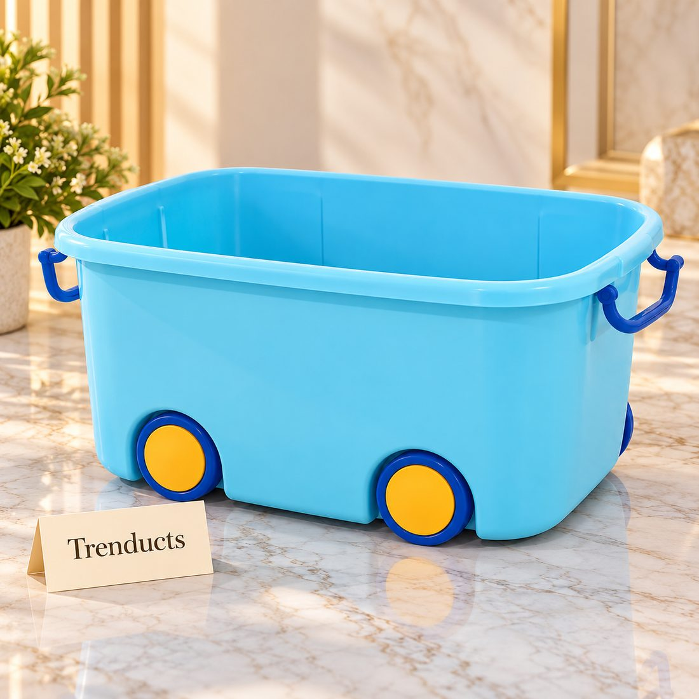

- First, measure the gap
- What belongs under the bed
- Bags, boxes or wheeled containers
- Keeping things clean and dry
- Organise by zone
- Children's rooms
- Shopping for the right containers
- A clearer room
In a small bedroom, every corner is negotiated. The wardrobe is full, the dressing table is crowded, and the floor is the last place anyone wants to pile things. Yet right in the middle of the room sits a large, often wasted space: under the bed.
For families in apartments or homes where several people share rooms, that space can hold a surprising amount. The trick is to use it in a way that stays tidy and keeps belongings safe from dust, damp and insects.
First, measure the gap
Beds vary widely. Some have a high frame with lots of room underneath; others sit low or have a box base with drawers built in. Measure the clearance from floor to frame and the width between the legs before buying anything. Containers that are slightly too tall become a daily annoyance.
If your bed is very low, consider bed risers made for the purpose, but make sure they are stable and suit the bed frame.
What belongs under the bed
The best candidates are things you need occasionally but not every day:

- Spare quilts, razais and blankets between winters.
- Off-season clothes during the summer-winter swap.
- Extra bedsheets and pillow covers for guests.
- Children's outgrown clothes kept for younger siblings or cousins.
- Wedding outfits and formal wear that are worn a few times a year.
- Documents and keepsakes in a closed box, away from direct floor contact.
Daily items such as school bags or shoes are better kept elsewhere, because constant pulling in and out leads to mess.
Bags, boxes or wheeled containers
Soft zipper bags with a clear window are lightweight, fold flat when empty and are ideal for quilts and clothing. Their window lets you see what is inside without opening them.
Foldable fabric boxes with a firm structure are good for clothes you want to keep neatly folded. Look for dust-proof lids.
Larger plastic boxes with wheels are best for heavier items and for anyone who finds bending difficult. Wheels let you roll the box out with a foot, which elders and anyone with back pain will appreciate.
Keeping things clean and dry
Dust is a constant challenge in Pakistani cities, so closed containers matter more than open baskets. Clean the floor under the bed before putting containers in place, and wipe the tops of boxes during your regular cleaning.
In humid places like Karachi, or during monsoon anywhere, damp can be an issue. Only store completely dry items, and open boxes every couple of months to let them breathe. A few neem leaves or naphthalene balls in a cloth pouch can help deter insects.
Organise by zone
Divide the space under the bed into zones. The side nearest the wall can hold things you need rarely, such as wedding wear or keepsakes. The edge nearest where you stand can hold more frequently used items, like spare sheets. Label each container on the end that faces out, so you can read it without pulling everything out.

Children's rooms
In children's rooms, under-bed boxes make excellent toy storage, as long as they are easy for small hands to open and push back. Encourage children to put toys away in the box before bedtime. It turns tidying into a simple routine and keeps the floor clear for play the next day.
Shopping for the right containers
If you are setting up under-bed storage for the first time, start with two or three containers and add more once you see what you actually store. The multipurpose storage boxes at Trenducts.pk include under-bed bags, foldable cloth boxes and large wheeled boxes, delivered across Pakistan.
A clearer room
When the space under the bed is organised, the rest of the room breathes. The wardrobe holds only current clothes, the floor stays clear, and finding the guest bedsheets no longer means emptying three cupboards. For small bedrooms, that hidden space can be the most useful storage in the house.